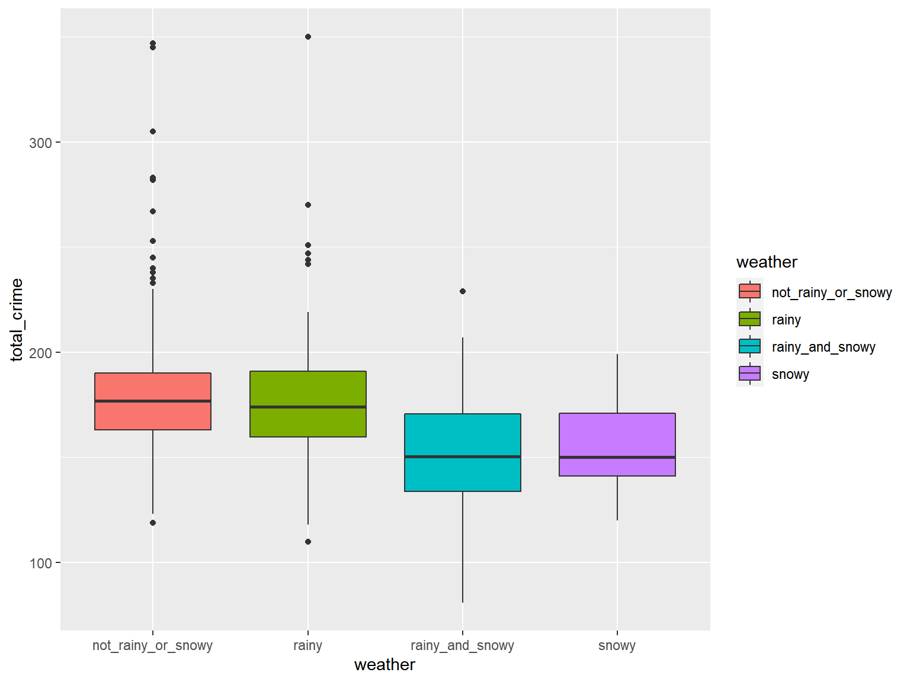

We want to verify whether the number distribution of umber of crime cases of each month is related to the year. Therefore we performed Chi-squared test for comparison of year of 2016 and 2017 :
\(H_0\) : The number distribution of number of crime cases of each month was the same in 2016 and 2017
\(H_1\) : The number distribution of number of crime cases of each month was different in 2016 and 2017
crime_weather <-
crime_df %>%
group_by(date)%>%
summarise(total_crime = n())%>%
merge(weather_df,by = "date")
df_1 <- crime_df %>%
mutate (
year = year(date)
)
table(df_1$year, df_1 $mon)%>%
knitr::kable(digits = 3)| 1 | 2 | 3 | 4 | 5 | 6 | 7 | 8 | 9 | 10 | 11 | 12 | |
|---|---|---|---|---|---|---|---|---|---|---|---|---|
| 2016 | 5143 | 4537 | 5224 | 5248 | 5510 | 5450 | 5482 | 5660 | 5309 | 5394 | 4978 | 4998 |
| 2017 | 5226 | 4370 | 4912 | 5097 | 5589 | 5481 | 5753 | 5696 | 5756 | 5996 | 5667 | 6595 |
chisq.test(table(df_1$year, df_1 $mon))##
## Pearson's Chi-squared test
##
## data: table(df_1$year, df_1$mon)
## X-squared = 257.95, df = 11, p-value < 2.2e-16As the result told us, the p-value < 0.05 , therefore we reject the null hypothesis and conclude that the distribution of number of crimes cases of each month is significantly different between 2016 and 2017.
We also concerned about whether weather conditions will affect New York City’s crime frequency per day. Therefore it is important to test hypotheses according to different weather conditions and crime cases per day.
At first, we divided the daily weather into four categories according to whether the precipitation and rainfall are greater than 0.
crime_weather_2 <- crime_weather %>%
mutate(weather = case_when(mean_prcp == 0 & mean_snow == 0 ~ 'not_rainy_or_snowy',
mean_prcp >0 & mean_snow >0 ~ 'rainy_and_snowy',
mean_prcp == 0 & mean_snow >0 ~ 'snowy',
mean_prcp >0 & mean_snow == 0 ~ "rainy")) %>%
select(total_crime, weather)
crime_weather_2 %>%
head(20)%>%
knitr::kable(digits = 3)| total_crime | weather |
|---|---|
| 347 | not_rainy_or_snowy |
| 157 | not_rainy_or_snowy |
| 143 | not_rainy_or_snowy |
| 159 | not_rainy_or_snowy |
| 139 | not_rainy_or_snowy |
| 164 | not_rainy_or_snowy |
| 176 | not_rainy_or_snowy |
| 161 | not_rainy_or_snowy |
| 183 | rainy |
| 134 | rainy |
| 167 | not_rainy_or_snowy |
| 179 | not_rainy_or_snowy |
| 161 | not_rainy_or_snowy |
| 185 | not_rainy_or_snowy |
| 194 | rainy |
| 170 | rainy |
| 153 | rainy |
| 141 | snowy |
| 182 | not_rainy_or_snowy |
| 173 | not_rainy_or_snowy |
We then conducted one-way ANOVA to test if the true mean daily crime cases of different weather is the same.
\(H_0\): There is no difference in the average number of crimes per day under different weather conditions in New York.
\(H_1\): At least the average number of crimes per day under two different weather conditions are different.
First, Let’s create box-plot of our data.
ggplot(data = crime_weather_2, aes(x = weather, y = total_crime, fill = weather)) + geom_boxplot()
From the plot, the distribution of daily crime number seems different in different weather.
And we conducted a ANOVA test
res.aov <- aov(total_crime ~ weather, data = crime_weather_2)
summary(res.aov) ## Df Sum Sq Mean Sq F value Pr(>F)
## weather 3 31642 10547 14.46 3.72e-09 ***
## Residuals 727 530437 730
## ---
## Signif. codes: 0 '***' 0.001 '**' 0.01 '*' 0.05 '.' 0.1 ' ' 1From the result, the p-value is smaller than 0.05, therefore we concluded that the average number of crimes per day is correlated to weather.
crime_weather_3 = crime_df %>%
merge(weather_df , by = "date")%>%
mutate(weather = case_when(mean_prcp == 0 & mean_snow == 0 ~ 'not_rainy_or_snowy',
mean_prcp >0 & mean_snow >0 ~ 'rainy_and_snowy',
mean_prcp == 0 & mean_snow >0 ~ 'snowy',
mean_prcp >0 & mean_snow == 0 ~ "rainy"))
table(crime_weather_3$weather, crime_weather_3$offense) %>%
knitr::kable(digits = 1)| ADMINISTRATIVE CODE | ADMINISTRATIVE CODES | AGRICULTURE & MRKTS LAW-UNCLASSIFIED | ALCOHOLIC BEVERAGE CONTROL LAW | ANTICIPATORY OFFENSES | ARSON | ASSAULT 3 & RELATED OFFENSES | BURGLAR’S TOOLS | BURGLARY | CHILD ABANDONMENT/NON SUPPORT | CRIMINAL MISCHIEF & RELATED OF | CRIMINAL TRESPASS | DANGEROUS DRUGS | DANGEROUS WEAPONS | DISORDERLY CONDUCT | ENDAN WELFARE INCOMP | ESCAPE 3 | FELONY ASSAULT | FORGERY | FRAUDS | FRAUDULENT ACCOSTING | GAMBLING | GRAND LARCENY | GRAND LARCENY OF MOTOR VEHICLE | HARRASSMENT 2 | HOMICIDE-NEGLIGENT,UNCLASSIFIE | INTOXICATED & IMPAIRED DRIVING | JOSTLING | KIDNAPPING | KIDNAPPING & RELATED OFFENSES | LOITERING/GAMBLING (CARDS, DIC | MISCELLANEOUS PENAL LAW | MURDER & NON-NEGL. MANSLAUGHTER | NEW YORK CITY HEALTH CODE | NYS LAWS-UNCLASSIFIED FELONY | NYS LAWS-UNCLASSIFIED VIOLATION | OFF. AGNST PUB ORD SENSBLTY & | OFFENSES AGAINST PUBLIC ADMINI | OFFENSES AGAINST PUBLIC SAFETY | OFFENSES AGAINST THE PERSON | OFFENSES INVOLVING FRAUD | OFFENSES RELATED TO CHILDREN | OTHER OFFENSES RELATED TO THEF | OTHER STATE LAWS | OTHER STATE LAWS (NON PENAL LA | OTHER STATE LAWS (NON PENAL LAW) | PETIT LARCENY | PETIT LARCENY OF MOTOR VEHICLE | POSSESSION OF STOLEN PROPERTY | PROSTITUTION & RELATED OFFENSES | RAPE | ROBBERY | SEX CRIMES | THEFT-FRAUD | THEFT OF SERVICES | UNAUTHORIZED USE OF A VEHICLE | VEHICLE AND TRAFFIC LAWS | ||
|---|---|---|---|---|---|---|---|---|---|---|---|---|---|---|---|---|---|---|---|---|---|---|---|---|---|---|---|---|---|---|---|---|---|---|---|---|---|---|---|---|---|---|---|---|---|---|---|---|---|---|---|---|---|---|---|---|---|---|
| not_rainy_or_snowy | 3 | 142 | 1 | 16 | 15 | 1 | 110 | 8185 | 44 | 1949 | 7 | 7904 | 516 | 3602 | 1550 | 14 | 4 | 3 | 3257 | 975 | 524 | 35 | 41 | 7542 | 972 | 10772 | 2 | 860 | 5 | 1 | 22 | 1 | 2115 | 36 | 1 | 128 | 1 | 3696 | 1397 | 9 | 220 | 209 | 14 | 249 | 2 | 51 | 1 | 13317 | 8 | 320 | 14 | 347 | 2232 | 1161 | 883 | 86 | 297 | 1036 |
| rainy | 2 | 94 | 0 | 10 | 7 | 1 | 55 | 4708 | 20 | 1199 | 1 | 4688 | 336 | 1935 | 858 | 5 | 7 | 2 | 1819 | 504 | 308 | 23 | 19 | 4306 | 591 | 6193 | 1 | 486 | 4 | 1 | 16 | 0 | 1236 | 16 | 0 | 69 | 4 | 2233 | 737 | 4 | 108 | 109 | 5 | 156 | 1 | 28 | 0 | 7685 | 3 | 187 | 13 | 191 | 1360 | 679 | 520 | 40 | 164 | 588 |
| rainy_and_snowy | 1 | 5 | 0 | 1 | 0 | 0 | 4 | 329 | 4 | 83 | 0 | 331 | 35 | 147 | 80 | 0 | 1 | 0 | 127 | 44 | 32 | 0 | 0 | 328 | 31 | 459 | 0 | 41 | 0 | 0 | 0 | 0 | 90 | 4 | 1 | 5 | 0 | 187 | 62 | 0 | 7 | 7 | 1 | 16 | 1 | 1 | 0 | 578 | 0 | 9 | 0 | 14 | 86 | 60 | 39 | 1 | 20 | 39 |
| snowy | 0 | 4 | 0 | 0 | 3 | 0 | 12 | 492 | 2 | 127 | 0 | 415 | 47 | 210 | 88 | 0 | 0 | 0 | 195 | 57 | 32 | 3 | 0 | 475 | 49 | 638 | 0 | 67 | 0 | 1 | 1 | 0 | 133 | 2 | 0 | 11 | 0 | 237 | 95 | 0 | 8 | 7 | 1 | 8 | 0 | 1 | 0 | 711 | 0 | 20 | 0 | 14 | 143 | 69 | 63 | 6 | 14 | 59 |
We also want to know whether the distribution of number of different type of crime cases across different weather are the same. Therefore, we performed another Chi-squared test on number of different type of crimes and weather.
\(H_0\) : The number distribution of each type of crime was the same in different weathers.
\(H_1\) : The number distribution of each type of crime was different in different weathers.
chisq.test(table(crime_weather_3$weather, crime_weather_3$offense))##
## Pearson's Chi-squared test
##
## data: table(crime_weather_3$weather, crime_weather_3$offense)
## X-squared = 224.29, df = 171, p-value = 0.00388We can see p-value is smaller than 0.05, so we reject the null hypothesis and conclude that there’s at least one type of weather’s proportions of number of different type of crimes is different from others at 0.05 significant level.